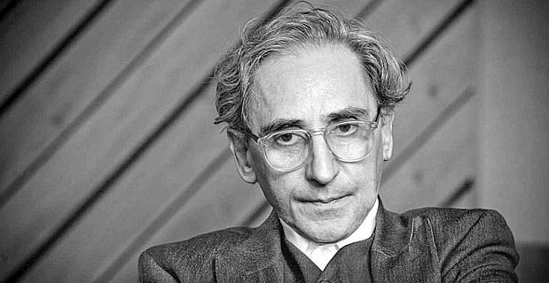

MUSICA D'AUTORE
Il termine cantautore è l'unione delle due parole "cantante" e "autore". è quindi chiaro che con cantautore si intenda chiunque scriva e canti una canzone. Questa definizione è stata però, ed è ancora, motivo di molte discussioni tra i cantautori stessi.
Nella seconda metà del secolo scorso, questa figura è stata molto importante. è infatti in quegli anni che i cantautori si sono presi la responsabilità di portare nelle loro canzoni dei messaggi, significati importanti per la società. Le canzoni hanno denunciato aspetti della vita, oltre e durante il racconto di storie comuni.
Il termine cantautore fu coniato al principio degli anni Sessanta dai dirigenti della RCRA Italia ed andò via via definendo il proprio significato grazie al progressivo interesse della critica, la quale ne evidenziò il carattere tipicamente italiano, tanto che Alessandro Carrera poté sostenere che "la canzone d'autore non è nata in Italia, ma il cantautore si".
L'idea dei discografici fu quella di fondere le suggestioni provenienti dalla canzone d'autore francese (gli chansonnier) e statunitense (i folksinger) con quanto negli ultimi anni la canzone d'autore italiana era andata acquisendo grazie alle innovazioni portate da Domenico Modugno. Nasceva, così, un tipo di artista nuovo che doveva divenire un tutt'uno con le proprie canzoni, delle quali doveva essere autore e interprete.
Scuola Genovese
In Italia la scuola genovese fu sicuramente una delle più grandi e importanti. Ispirata soprattuto dai francesi, troviamo artisti come Fabrizio De Andrè, Luigi Tenco, Gino Paoli, Bruno Lauzi, Umberto Bindi, Ivano Fossati, Sergio Endrigo, Piero Ciampi e, in modo minore, Paolo Conte. I genovesi hanno dato agli ascoltatori emozioni raffinate e fortissime. La morte prematura e con un velo misterioso di Tenco ha segnato tutti i cantautori. Fabrizio De Andrè, definito da Lucio Dalla il prototipo del cantautore italiano, è conosciuto a livello mondiale grazie alle sue meravigliose canzoni. Fernanda Pivano, scrittrice e traduttrice, disse che sarebbe importante non dire che Fabrizio De Andrè è il Bob Dylan italiano ma al contrario, bisogna dire che Bob Dylan è il De Andrè americano.
Scuola Bolognese
Importante fu anche la scuola bolognese, differente da quella genovese perché più ritmica e allegra.
Il maestro Francesco Guccini è considerato il padre di essa, insieme a Lucio Dalla. Da qui usciranno artisti del calibro di Vasco Rossi, Luciano Ligabue, Zucchero e in seguito Luca carboni, Laura Pausini e Samuele Bersani.
Bologna fu conosciuta anche grazie ai Nomadi, gruppo musicale fondato nel 1963 all'interno del movimento del beat italiano dal tastierista Beppe Carletti e dal cantante Augusto Daolio. Hanno pubblicato ottantadue album tra dischi registrati in studio o dal vivo e raccolte varie e sono fra i più longevi complessi al mondo con oltre cinquanta anni di attività. Avendo venduto complessivamente 15 milioni di dischi, sono il terzo complesso italiano per vendite, preceduto dai Pooh e dai Ricchi e Poveri.
Cantautori romani e milanesi
Anche Roma, vide passeggiare per le sue vie cantautori importanti. Claudio Baglioni, Renato Zero, Antonello Venditti e Francesco De Gregori, tra i più importanti.
Mentre a Milano troviamo Giorgio Gaber, Roberto Vecchioni, Adriano Celentano, Enzo Iannacci e Ornella Vanoni.
Franco Battiato
Data la recente scomparsa ritengo necessario citare singolarmente Battiato. Nato Francesco Battiato il 23 marzo 1945, muore il 18 maggio 2021. L'artista ha fatto parlare di sé per il grande numero di stili che ha approfondito e combinato tra loro in modo eclettico e personale: dopo l'iniziale fase di musica leggera della seconda metà degli anni sessanta, è passato al rock progressivo e all'avanguardia colta nel decennio seguente, che arrivò anche all'estero. Successivamente, dall'album L'era del cinghiale bianco del 1979, si è allontanato dalla musica sperimentale ed è passato ad un personalissimo pop d'autore che ha iniziato a farlo conoscere al grande pubblico e successivamente vendere milioni di copie (in particolare nell'81 con La voce del padrone, suo apice di vendite), con testi criptici e citazionistici, musiche con influenze new wave e incursioni classiche negli arrangiamenti, genere di cui è molto appassionato e probabilmente suo preferito. Fra gli altri stili in cui si è cimentato vi sono la musica etnica, quella elettronica. Lungo la sua carriera, in cui ha ottenuto un vistoso successo di pubblico e critica, si è avvalso dell'aiuto di numerosi collaboratori fra cui il violinista Giusto Pio (nella fase di più successo a partire da L'era del cinghiale bianco) e il filosofo Manlio Sgalambro (coautore e autore di molti testi dei suoi brani a partire da L'ombrello e la macchina da cucire del '95, collaborazione che non si interromperà mai, continuando fino al suo ultimo album). I suoi testi riflettono i suoi interessi, fra cui l'esoterismo, la teoretica filosofica, la mistica sufi (in particolare tramite l'influenza di G.I. Gurdjieff) e la meditazione orientale. Il musicista si è anche cimentato in altri campi come la pittura e il cinema. È uno tra gli artisti con il maggior numero di riconoscimenti da parte del Club Tenco, con tre Targhe e un Premio Tenco.
